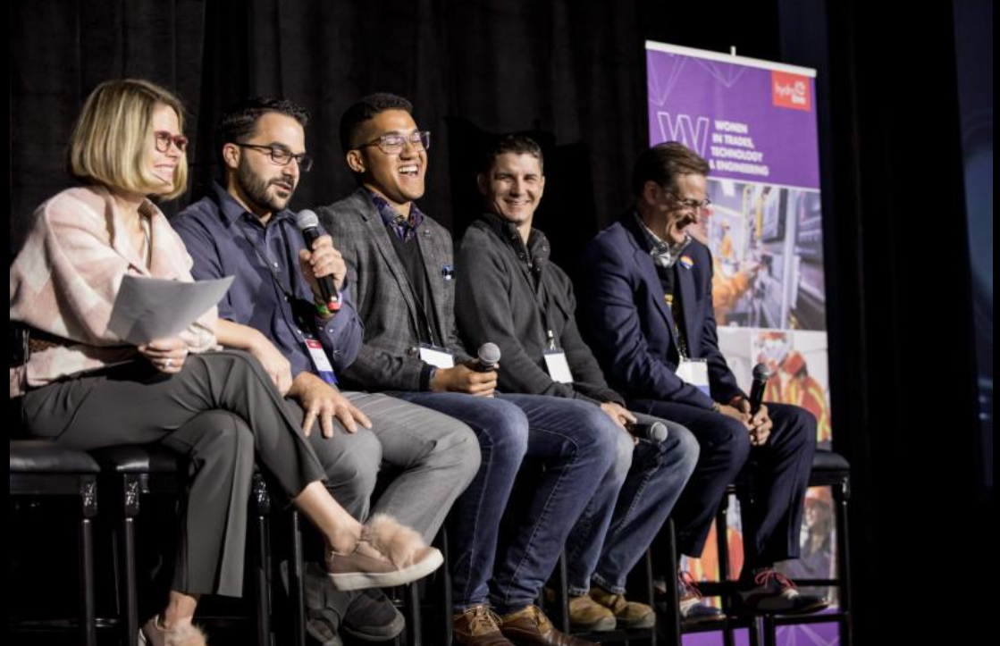

My Toolkit
Here are some of the
technologies that I
use every day.
-

- 
- 
About Me
- 
I am a front-end developer from Toronto who
originally pursued a process engineering career
in the power industry.
Early on, I took a process-centric approach to
solving problems. Leveraging the Lean Six Sigma
methodology, I was able to build automated
systems that helped my teammates perform their
jobs more efficiently. As I continued to build
more complex projects, however, I would
continuously ask myself “How can I make things
better for the user?”
In search of an answer, I studied user
experience design which gave me a user-centric
approach to solving problems and helped me
gather data to ensure that my projects were
equally as effective as they were efficient.
By marrying both approaches, I was able to
channel everything that I had learned into one
ambitious project, a training website that
helped manage the technical development of
junior P&C engineers through an employee-led
curriculum.
This project gave me the confidence to attend
Juno College of Technology, level-up my skills,
and continue to put the user first.
Interests
At work, I am a:
- Diversity & inclusion advocate
- Outgoing extrovert
- Public speaker
Outside of work, I enjoy:
- Taking my dog on adventures
- Cheering for the Raptors!
- Listening to podcasts
Recent Projects
Earthquake Incident Tracker
HTML | SCSS | JavaScript | Firebase | API | React (Routing)
An agency-style project that highlights earthquake incidents that appear around the world, and assign superheroes to attend based on magnitude.
View Demo View SourceMel's Drive-In
HTML | SCSS | JavaScript | Firebase | React (Hooks)
A food delivery app that allows the user to pick a burger from the menu, customize it, and add it to the cart. Inspired by the movie American Grafitti (1973).
View Demo View SourceHacker News Sentiment Analyzer
HTML | SCSS | JavaScript | APIs
An app that fetches news articles from the Hacker News API and analyzes the top comment to determine reader sentiment via the Meaning Cloud API.
View Demo View SourcePlanted Invitation
HTML | CSS | SCSS (Mixins & Partials)
A pixel-perfect replica of a photoshop design provided by the instructors at Juno College that is built to be semantically accessible and responsive.
View Demo View SourceP&C Training Site (UX Project)
SharePoint | InfoPath | Nintex | Sketch | InVision | Miro
An internal SharePoint site designed for Hydro One that enables administrators to manage the registration, scheduling, and delivery of courses for junior engineers.
View Miro View ReportYour House Fitness App (UX Project)
Sketch | InVision | Miro
An fitness app mock-up that allows users to access the YHF wellness vault of articles, book appointments with trainers, and buy workout gear from the online store.
View InVision View ReportMy Journey
How #100DaysOfCode led to a change
In this Medium article, I break down my journey from process engineering into web development and share how learning a little bit every day made this possible.
View ArticleReaching #800DaysOfCode milestone
Every day, I document my technical learnings and I share tutorials, resources, and podcasts that have helped to shape my self-directed programming development plan.
View Thread